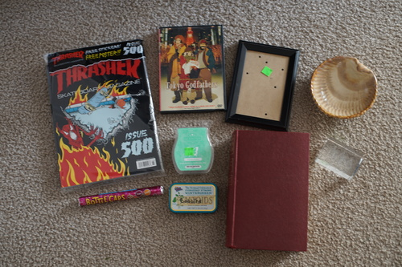

here's my disappointing thrift store haul. okay im actually just disappointed about the bobbins. i found a really cute vintage dress that i loved! but it would have been a bag on me, so i took pictures of it and maybe I'll incorporate the design into a doll dress someday
ryan bought this. it has stickers! and a free poster!
another ryan purchase (at the grocery store)
i hope and prayed these would fit my machine. i took a chance. i lost. how do i find someone to give them to? do i just buy a newer machine to match them??? they make identifying the correct bobbins so hard. idk why no one bothered to label them all. im looking for Viking #4114401 (supposedly) which i have no idea how to identify in the wild.
my only cool find
for ryan's takane print
i hope ryan's mom will like this. she really likes penguins...
i hope ryan's aunt will put this in her nautical themed home somewhere
Ryan's. he wants you to know he used store credit and didnt spend a thing!
i spent a few days playing with paper and tape and sewing a blouse for hina. I'm like almost happy with it, but its not perfect. the collar just wont stay down! no amount of ironing will convince it. i put two little tiny stitches in to keep in down. i was going to put a lot more details in like pintucks, but the fabric does not like my machine at all. i'd have to do all detail work by hand, so i let it go this time.
i did pattern in some darts, but i sewed them unevenly and one disappeared under the seam and one was still visible. the fit was really tight in the end so i ended up adding little panels in the back to attach the snaps to. i think ill try again with cotton and maybe make the pattern a little big bigger too.
my big mental revolution was realizing that during the 2-3 days i was working on these patterns, i missed hina terribly! that feeling is incredibly silly, because i was playing with her thw whole time, she just didnt have her head on. i also watched this video on doll pattern making which isnt BJD in particular, but this dude totally knows what he's doing (much more than lomi) so its worth a watch if you want to draft clothes. it also inspired me to start looking into making a SD10 dress form. i decided that a dress form is next project so i dont have to leave hina's body headless for days next time.

ive been thinking about my doll wishlist lately. will any doll on that wishlist give me the same feeling to get as hina? it feels like there wont be another doll that brings me the same amount of joy to open and own. none of them have been on my wishlist as long as she was and my higher tier wishlist items are more about the experience anyway. i still want to do all of those if i ever did get the chance!
since i want to buy dolls for life, i want to be super picky about the dolls i am buying. I keep thinking about unoa rowan prim and she's pretty, i like her body a lot, but none that ive seen so far have stolen my heart. i think i like latea better, but since there's not a ton of rowan prims out there, maybe i havent seen a customized one that shows her full potential. I also dont want to be wishy washy about my choices! i feel like if i have to decide between two, im not in love. i hope i will be smitten with the next doll i decide to buy.